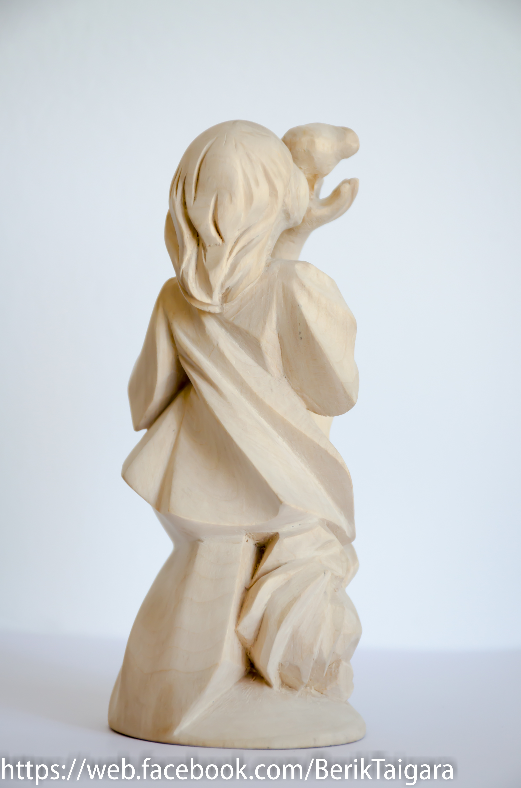
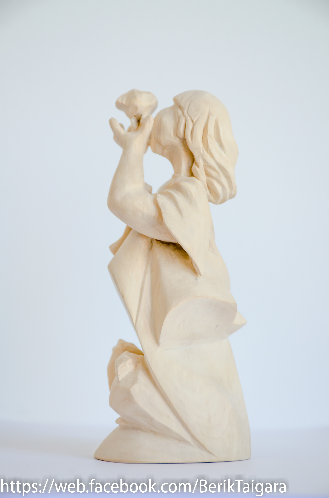
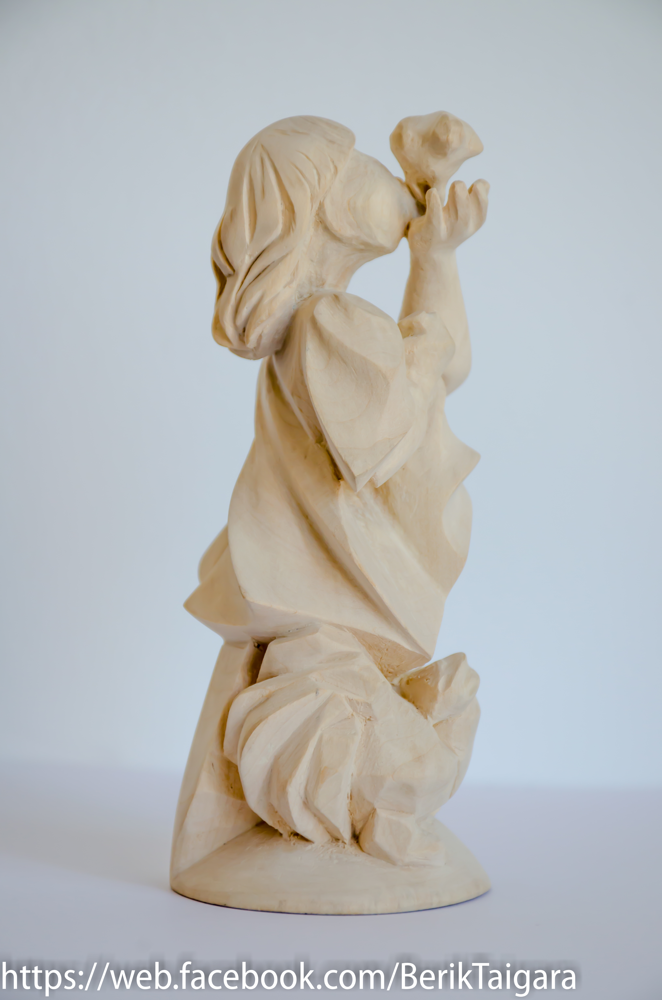

Balapan
Sculpture
Concept
"Balapan" is a sculpture that embodies the tenderness of childhood and the fragile bond
between humans and nature. Depicting a child gently holding and kissing a small chick,
the work reflects themes of purity, innocence, and care. The composition highlights the
natural instinct of protection and affection, symbolizing the continuity of life and the
importance of compassion.
Processes & Tools
Carved from a single piece of wood, "Balapan" emphasizes smooth, flowing lines and soft
forms to convey innocence and warmth. The artist chose to keep the surface minimally
treated, allowing the natural qualities of the wood to resonate with the gentle subject
matter. The simplified details direct attention to the emotional essence of the scene
rather than ornamental complexity.
Technical Details
Material: Wood (likely poplar)
Height: ~30–35 cm
Tools: Chisels, carving knives, rasps
Finish: Natural matte surface
Year: 1994-1997
Height: ~30–35 cm
Tools: Chisels, carving knives, rasps
Finish: Natural matte surface
Year: 1994-1997





